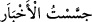
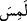

Şeyh Ebu’l-Abbâs (k.s.) der ki: Bu zamanın fakirlerinden zâlimlerin mallarını çokça
yeyip onların sözlerine kulak veren kimselerde Yahûdî özelliği vardır. Cenab-ı Hak
buyurur: “Hep yalana kulak verir, durmadan haram yerler.” (Mâide 5/42)
Süfyân Sevrî (r.a.) şöyle der: Zan iki türlüdür; birincisi günahtır ki bir zanda bulunup
onu dile getirmendir. İkincisi günah değildir; bir zanda bulunup dile getirmemendir.
Zannın bazısının günah olmasından murad, dile getirdiğin ve konuştuğun zannın günah
olmasıdır.
Hasan’dan şöyle naklolunmuştur: Bizim yaşadığımız zamanda insanlar hakkında
zanda bulunmak haram idi. Sen öyle bir zamandasın ki, amel et, sus, insanlar hakkında
dilediğin şekilde zanda bulun. Çünkü onlar buna layıktır ve zannedilen şeyler
kendilerinde vardır. Yine o şöyle der: Şerli kimselerle beraber bulunmak hayırlı
kimselere hüsn-i zan beslemeye yol açar.
Mütevekkil, Medine’de Zekkâk’ın câriyesini talep etmişti. Zekkâk, Cüneyd’in
akranı ve Mısır’ın büyüklerindendi ve neredeyse câriyenin sevgisinden aklı başından
çıkacaktı. Câriye mevlâsına dedi ki: ‘Allah hakkında ve benim hakkımda hüsn-i zanda
bulun. Ben senin sevdiğine kefilim.’ Akabinde câriye Mütevekkil’e götürüldü. Huzuruna
gelince câriyeye şöyle dedi: ‘Oku.’ Cariye de şu âyeti okudu: “(Onlardan biri şöyle
dedi:) Bu, benim kardeşimdir. Onun doksan dokuz koyunu var. Benimse bir
koyunum var.” (Sâd 38/23) Mütevekkil onun ne demek istediğini anladı ve onu geri
verdi.
Enes (r.a.)’ten gelen bir rivâyet de şöyledir: Rasûlullah (s.a.) hanımlarından biri ile
konuşurken bir adam oradan geçti. Rasûlullah (s.a.) onu çağırıp şöyle dedi: “Ey
filanca! Bu benim zevcem Safiyye’dir.”[200] Rasûlullah (s.a.) Ramazanın ilk on gününde
bu hanımını ziyaret etmişti. Adam dedi ki: Ya Rasûlallah, başkası hakkında bir zanda
bulunurdum ama senin hakkında bir zanda bulunmazdım. Efendimiz (s.a.) de şöyle
buyurdu: “Şeytan kanın dolaştığı gibi Âdemoğlu içerisinde dolaşır.”[201] İhya’da
böyle geçmektedir.
Bu rivayette, insanların kalplerini sû-i zandan, lisanlarını gıybetten korumak için
töhmet yerlerinden kaçınmaya ve nefsi temize çıkarmaya işâret vardır. Nefis ve şeytanın
mekr, iğvâ ve fitne-fesad çıkarma hususunda dehşetengiz durumları vardır. Mennân olan
Allah’tan bizleri emanda kılmasını niyaz ederiz.
Fiilin aslı () olup ()’lerden birisi hazf olunmuştur. Müslümanların ayıp ve
kusurlarını araştırmayın, demektir. () kökünden olup () babındandır. Bu kökte
‘talep’ anlamı vardır. () ifadesi, haberi talep etmek ve araştırmak demektir. () babına aktarılınca bu talep mânâsına tekellüf mânâsı da eklenmiş olur. ()
denir ve ‘haberleri araştırdım’ mânâsı kasd olunur. () dendiğinde tekellüf
mânâsı da murad olunur. () gibi ki o da () fiilinden () babıdır. Bir şeyin
halini bilmek için el ile dokunmak demektir. () dendiğinde tekellüf ve talep